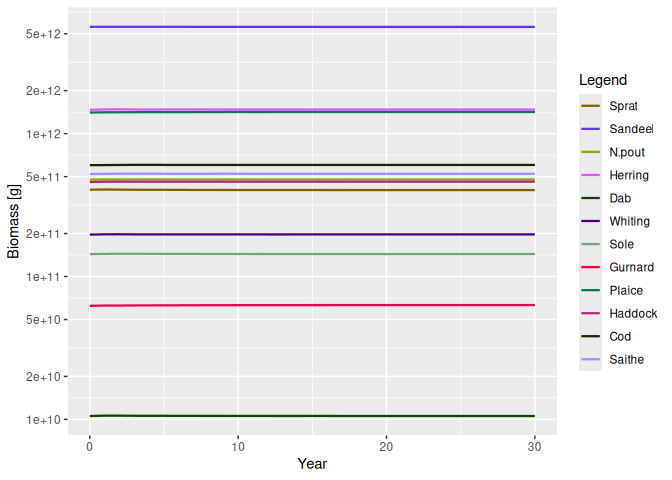
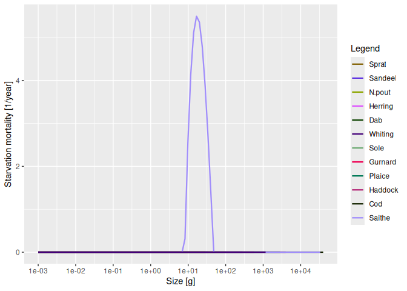
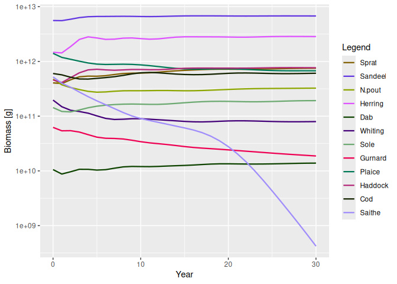

This is an extension package for the mizer package (https://sizespectrum.org/mizer/) to implement starvation mortality.
Installation
You can install the development version of mizerStarvation from GitHub with
remotes::install_github("sizespectrum/mizerStarvation")Example
This is an artificial example just to illustrate usage. We start with the North Sea model that comes with the mizer package.
library(mizerStarvation)
library(tidyverse)
library(ggplot2)
params <- NS_params
sim <- project(params, t_max = 30)
plotBiomass(sim)
We add starvation mortality
params <- setStarvation(NS_params, 10)We decrease resource availability to create some starvation
initialNResource(params)[w_full(params) > 0.1] <- 0
resource_capacity(params) <- initialNResource(params) * 1.0001We can calculate the starvation mortality for each species as a function of size with getStarvMort():
starv_mort <- getStarvMort(params)
plot(starv_mort)
Of course now Saithe will go extinct, not only because of the starvation mortality but also because it stops growing before maturity.
sim <- project(params, t_max = 30)
plotBiomass(sim)